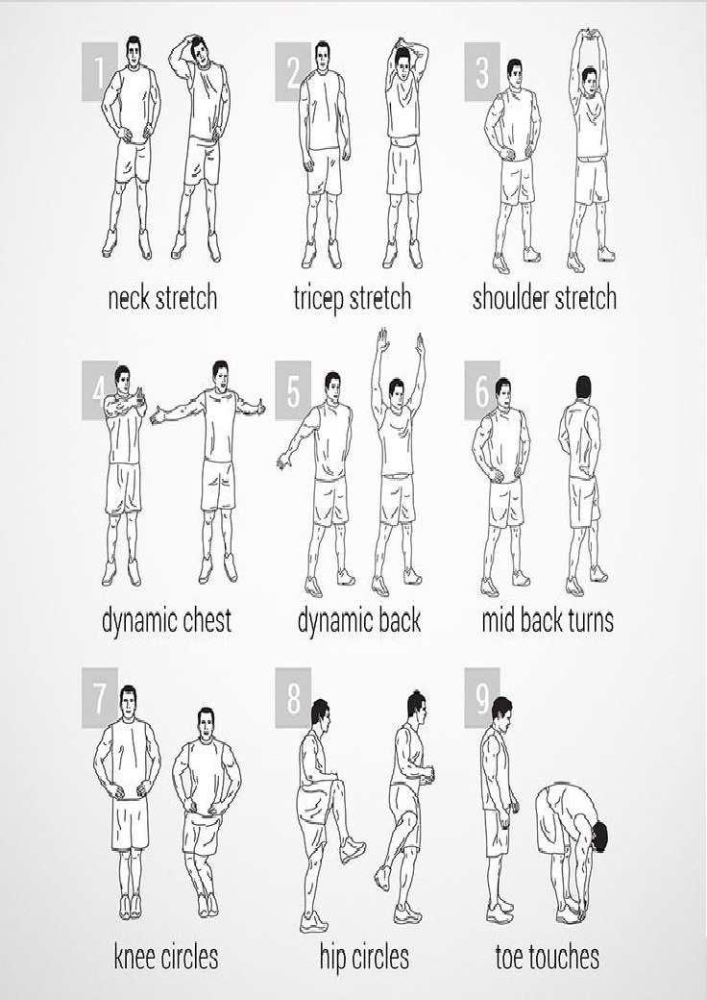
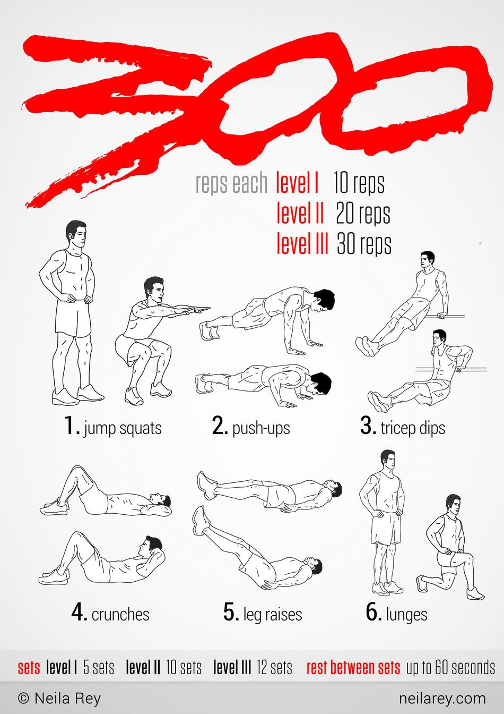

Загрявка

Казано най-просто, ако не отделите време за загрявка или я изпълнявате грешно, не само може да провалите тренировката си, защото няма да се възползвате в максимална степен от възможностите на вашето тяло, но и рискувате да си навлечете нежелани травми и контузии, които да възпрепятстват бъдещата ви физическа активност.
Когато отделяме нужното време за правилна загрявка, стимулираме притока на кръв и кислород до мускулите и забързваме сърдечния ритъм. Освен това, подготвяме централната нервна система и подобряваме координацията между мозъка и мускулите, като по този начин по-ефективно изпълняваме предварително поставените си тренировъчни цели.
Кръгова трениовка

Показаната тренировка по-горе се нарича "кръгова".Въпреки породилите се обстоятелства и ограничените възможности за упражнения, нашето мнение е, че кръговата тренировка е най-ефективната в ситуация на трениране от дома.Тя е подходяща както и за начинаещи,така и за възрастни, поради възможността да се повтори няколко пъти в зависимост от нивото на трениращия.Изпълнявайте упражненията без почивка. Почивката идва след кръга от упражнения - около 2 минути. Правете между 2-5 кръга според възможностите ви.Почивката между отделните кръгове е 90-120 секунди.Общата продължителност на тренировката не трябва да надвишава 45 минути. Първият кръг може да е с по-малки тежести, но следващите трябва да са по-натоварващи.